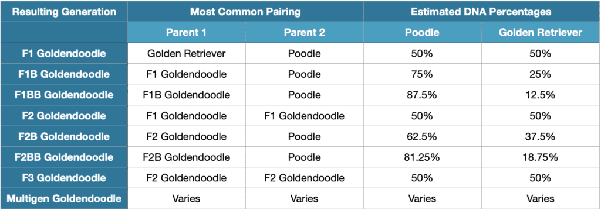

What is a Goldendoodle?

.jpg)
A Goldendoodle, also known as the Doodle, is a dog crossbreed created by crossing a Golden Retriever and a Poodle. First widely bred in 1990s, the crossbreed is bred in three different size varieties corresponding to the size variety of Poodle used as a parent.
Generations
What types of Goldendoodles are there?
Goldendoodles come in all colors and sizes. Goldendoodles are across between a Golden Retriever and a Poodle. The determining factor of the size comes from the Poodle side. The Poodle comes in 3 different sizes: toy, mini, and standard. Poodle sizes are determined by their height, measured from the highest point at the shoulders, down to the floor.
When determining the weight of the litter, it is typical to add the weights of the Mother and Father and then divide by 2. The adult weight of the puppy should end up within 10lbs of that weight. That is why it is so critical to know exactly who the parents are to get the best estimate.
Most of the time you see F1, F2b, Mulitgen,etc. These indicate what generation or type of goldendoodle you are getting.
Why do Goldendoodles make amazing dogs?
Goldendoodles have quickly become one of America’s most loved dog breeds and it’s easy to see why! Whether it’s the non-shedding coat, their eternal loyal and friendly temperament, the active lifestyle or the drop-dead gorgeous looks, it seems the Goldendoodle has captured America’s heart and is here to stay!